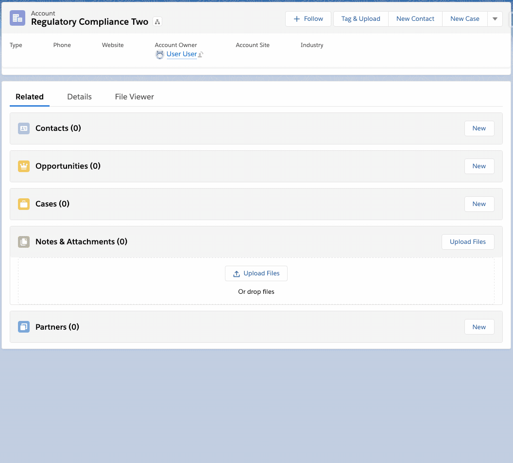
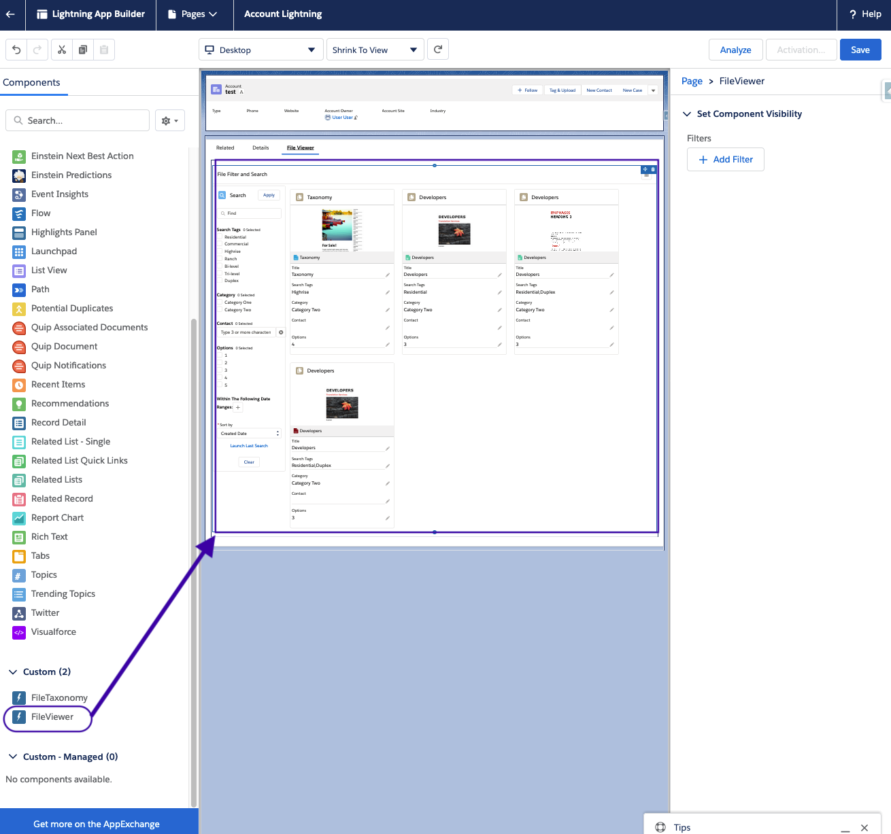

Project is a native saleforce application designed to make the storing, retrieving and editing of Content faster and easier.
Easily Tag Files As They are Uploaded

Search driven by your companies values
Enjoy heirarchical navigation we have "folders"
ContentDocumentLink to virtual folder object
Add the 'Tag and Upload' Global Action to the Global layout or to the layout of any Object

Add the Lightining Component "File Viewer" to any lightning Record Page Layout to get a contextual view of related content.

Curate taxonomy fields by adding custom fields onto the ContentVersion Object to control tagging and searchablity. Add picklists, multipicklists, lookup fields, and others to help define the shape of the documents.

Give users permissions to the taxonomy fields and the permission set for 'FileViewer'.
Discover and work with files through the File Viewer tab.